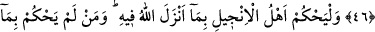
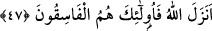

TEVRAT VE İNCİL’DE
HÜKÜMLER
44- Gerçekten Tevrat’ı biz indirdik. Onun içinde doğruya rehberlik ve nur vardır.
Allah’a teslim olmuş peygamberler onunla yahûdîlere hükmederlerdi. Rablerine
samîmî olarak kulluk edenler ve âlimler de Allah’ın Kitab’ını korumakla
görevlendirildikleri için (onunla hükmederlerdi). Onlar, ona şâhitlerdi. Şu halde (Ey
yahûdîler ve hâkimler!) insanlardan korkmayın, Ben’den korkun. Âyetlerimi az bir
bedel karşılığında satmayın. Kim Allah’ın indirdiğiyle hükmetmezse işte onlar
kâfirlerin ta kendileridir.
45- Tevrat’ta onlara şöyle yazdık: Cana can, göze göz, buruna burun, kulağa
kulak, dişe diş ve yaralara karşılıklı kısas vardır. Kim bunu (kısası) bağışlarsa
kendisi için o keffâret olur. Kim Allah’ın indirdiği ile hükmetmezse işte onlar
zâlimlerdir.
46- O peygamberlerin peşinden kendisinden önce gelen Tevrat’ı tasdik edici
olarak Meryem oğlu Îsâ’yı gönderdik. Ona da içinde hidâyet ve nur bulunan,
kendinden önceki Tevrat’ı tasdîk eden, takvâ sahiplerine bir hidâyet ve öğüt olan
kendinden önce İncil’i verdik.
47- İncil’e inananlar, Allah’ın onda indirdiği (hükümler) ile hükmetsinler. Kim